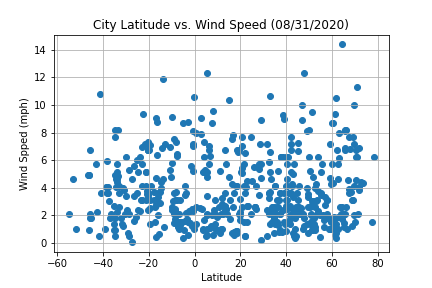

Wind Speed

According to wikipedia, "wind speed is the fundamental atmoshperic quantity caused by air moving from high to low pressure, usally due to changes in temperature." The graph above shows that wind speed is mild with most mph between 2 and 4 knots.